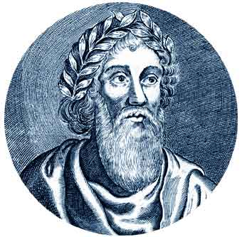
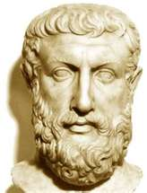
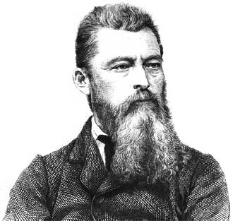
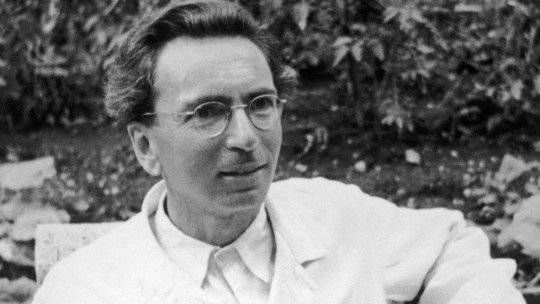
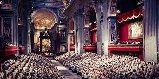
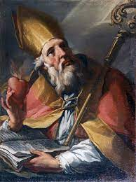

Cuadro comparativo de sepulveda y casas
| temas de debate | Sepulveda | fray Bartolome de las casas |
|---|---|---|
| cuadro comparativo entre sepluveda y casas | juan gines de sepulveda nacio en 1490 y fallecio un de 17 fr noviembre de 1573 fue un sacerdote catolico espanol conocido por su fsceta de filosofo jusista e historiador , y su enfrentamientos en defesa de la guerra contra los indigenas en opococion a fray Bartolome de las Casas Gines se tralado a Napoles al lado del cardenal Cayetano quien le encargo la revision del texto griegodel Nuevo Testamento.Acompanado a Genova al cardenal Francisco de los Angeles Quinones encargado de los Angeles Quinones encargado de cumplimentar a Carlos v, y el emperador quedo tan prendado de el que le nombro su cronista Su papel contrario .Su papel contrario a las reformas eclesiasticas le llevo a compartir su pensamiento | Brtolome ded las casas O.P fue un enconmendado espanol y luego fraile dominico,cronista teologo,filosofo,jurista obispo de chiapas y escritor.Alos treinta anos renuncio publicamente a los reapartimientos y enconmiendas de indios que habia explorado y desde entonces se dedico a defenderlos,por tal razon se le conoce como el principal defensor de los indigenas y fue nombrado Procurador o protector universal de todos los indios de las Indias>>E N 1515 ,reformo sus puntos de vista, renuncio a sus esclavos y los indios de encomienda y abogo ante el Rey Carlos V,Emperador del Sacro Imperio Romano en nombre de los derechos de los Indigenas |
Boecio define al nombre como rationale animal Es una persona compuesta de un cuerpo y un alma inmortal mentes hominum hullo modo esse mortales Estas almas no han olvidado por completo lo que aprendieron en su existencia anterior ala uniom\n del cuerpo Aqui Boecio se inclina abiertamente por la doctrina platonica del conocimento y parece admitir la prexistencia de las almas.Por ello siglos mas tarde San Alberto Magno lo incluiria entre los defensores ;a prexistencia de las almas Aqui se plantea el modo de conciliar la libertad humana con la Providencia divina que lo gobierna todo y no deja nada al alzar Si Dios conoce lo que va a realizar(futuro contigente) Para Boecio un planteamineto asi es inexacto pues son dos asuntos distintos ya que la prevision de actos humanos por partes de Dios se realiza en el tiempo en el que hay un Antes y un Despues Aunque son realidades distintas , una eterna y otra temporal sin embrargo el destino no es mas la realizacion temporal de los decretos de la Providenacia,por tanto se opone a ella sino que la sirve y en consecuencia destruye libertad humana
La critica deJefones ridiculiza el antropomorfismo de homero y hesiodo que atribuyendo a los dioes es censurable y vergonzoso entre los hombres hurtos adulterios y muchas cosas ilicitas es dificil presisar la idea de Jenofanes acerca de la divinidad No aparece monoteismo pues admite existencia dioses imferiores y demonios Los antiguos enterndieron sentido monismo bien hay que interpretarlo ala manera milsesios cuyas dictrinas conocia osea principio material unico del procedencia o sea una esfera redonda admite la experciencia recoge la misma idea distincion entre el ser las cosas particulares
La crítica de Feuerbach se refiere a la crítica filosófica realizada por Ludwig Feuerbach en el siglo XIX, especialmente en su obra principal "La esencia del cristianismo". Feuerbach criticó la filosofía y la teología tradicional, argumentando que estas disciplinas se basaban en suposiciones y conceptos abstractos que desviaban la atención de la realidad concreta y tangible del ser humano. La crítica de Feuerbach se centró en la religión, en particular en la religión cristiana. Sostenía que la religión era una proyección de los deseos y necesidades humanas en un ser supremo imaginario. Según Feuerbach, las características y atributos divinos que se le atribuyen a Dios son en realidad las características y atributos que los seres humanos desean o carecen. En este sentido, Feuerbach afirmaba que "Dios" era una creación de la mente humana, una expresión de los anhelos y aspiraciones humanas. Feuerbach también argumentó que la teología tradicional invertía la relación entre Dios y los seres humanos. En lugar de ser los seres humanos quienes creaban a Dios, la teología afirmaba que Dios había creado a los seres humanos a su imagen y semejanza. Feuerbach consideraba que esta inversión llevaba a una alienación del ser humano de sí mismo, ya que se le atribuían sus propias cualidades y potencialidades a una entidad externa y sobrenatural. Además de su crítica a la religión, Feuerbach también criticó la filosofía idealista de su tiempo, especialmente la filosofía de Hegel. Argumentaba que el idealismo filosófico se centraba demasiado en la razón y el pensamiento abstracto, ignorando la realidad concreta y material de la existencia humana. En resumen, la crítica de Feuerbach se dirige principalmente a la religión y a la filosofía idealista, argumentando que ambas desvían la atención de la realidad concreta y tangible de los seres humanos, y que la religión en particular es una proyección de los deseos y necesidades humanas en un ser supremo imaginario. Feuerbach buscaba liberar a los seres humanos de estas ilusiones y dirigir su atención hacia su propia naturaleza y potencialidades. Su crítica tuvo una influencia significativa en el desarrollo del pensamiento materialista y en el surgimiento del materialismo histórico posteriormente desarrollado por Karl Marx.
El hombre en busca de sentido es un libro escrito por Viktor E. Frakl, un neurólogo y psiquiatra que sobrevivió a los campos de concentración nazi. Frankl, en un principio quería publicar el libro en el anonimato impregnando solamente su código de prisionero en la portada creyendo que no tendría éxito. Pero se equivocaba. De este libro donde relata su historia, se han vendido millones de copias por todo el mundo siendo traducido a 24 idiomas siendo de inspiración a muchas personas. ¿Quisieras lee En esta primera fase, Viktor Frankl relata como fue el internamiento de las personas en el campo de concentración. Mil quinientas personas fueron trasportadas en un tren durante varios días. Los vagones estaban tan repletos de gente que solo quedaba despejada la parte superior de las ventanillas, por donde entraba la claridad gris del amanecer. Todos creían que los llevaban a una fábrica de munición como empleados para trabajos forzados. Hasta que llegaron realmente a “Auschwitz”. ese nombre evocaba las mayores atrocidades: cámaras de gas, hornos crematorios, el exterminio… En este resumen del libro el hombre en busca de sentido, en el segundo capítulo Viktor Frankl describe como los prisioneros pasan de un “shock”, a una habituación, que se convierte en “una especie de muerte emocional”, y la apatía (que se podía tomar como autodefensa). Ahí es donde aparecía la nostalgia extrema, al comparar los niveles tan deprimentes de calidad de vida que podían tener en ese momento. Ya los momentos en donde ciertos detalles se podían ver como aberraciones, ya se volvían “parte del paisaje”. En otras palabras: todos los esfuerzos se reducían a lograr sobrevivir. Ciertas necesidades normales que el ser humano necesita satisfacer se veían literalmente truncadas, como era la parte sexual; ya casi no tenía importancia. Los sentimientos, ya habían desaparecido por la monotonía diaria. El sueño, era de las cosas que se le tomaba gran importancia, pues este era el único que podía aislarlos de la cruda realidad. Los golpes y maltratos físicos se esperaban por el mínimo detalle o sin motivo alguno. Por ejemplo, el no simpatizarle a un kapo (presos que gozaban de ciertos privilegios y hacían funciones de vigilar), significaba tener, además de una serie de insultos que venían ya incluidos, trabajo extra y golpes de más. Sin embargo, no todos eran despiadados, podían incluso tener cierta afinidad con los demás presos, como le sucedió a Viktor Frankl, y eso hacía que pudieran tener ciertas “ventajas”. Una de esas ventajas para Frankl fue el poder estar muy adelante en la fila para la hora de la comida, lo cual permitía poder tener los guisantes del fondo. Con esto último se puede decir que el hambre era un aspecto importante, pues todos sufrían de desnutrición. Esta experiencia, Viktor Frankl la define (según otros autores), como una experiencia incierta, una “existencia provisional, cuya duración se desconoce”, lo cual trastornada la verdadera duración del tiempo: Un día podía ser eterno, pero la semana podía ser muy rápida. Lo interesante de todo es analizar lo que realmente sintieron al caminar y observar que eran libres: NADA. Lo que normalmente las personas piensan es que brincaron de la alegría y salieron corriendo a recuperar su vida. En realidad, caminaron lentamente a la salida, aun sin creer lo que realmente estaba pasando, y atónitos, pues durante su estadía en el lager sus emociones fueron reducidas a meros impulsos. Otra de las cosas comunes que ocurrieron, relacionado con lo anterior, fue el recuperar las emociones perdidas. Muchos, desarrollaron un desprecio contra el mundo que los rodeaba, incluso con seres vivos que no tuvieron la culpa de su tragedia. Pasaron de ser oprimidos y ser opresores. Además, se presentaron dos experiencias debido a la tensión psicológica: la amargura, al no poder oír palabras de verdadera empatía, ni tampoco reintegrarse a la vida anterior. Y el desencanto, en donde se daban cuenta que el sufrimiento que tuvo el campo no fue el máximo, sino que se puede sufrir más, al ver que todo ha cambiado. Y que nunca nada será igual… La meta y objetivo en el cual muchos se aferraron durante su vida en el campo (un hijo, una esposa), quizás fue solo una ilusión, ya que todo desapareció. Frankl cierra su historia diciendo: “Después de soportar aquellos increíbles sufrimientos, uno ya no tenía nada que temer, salvo a su Dios”.
Mientras las tropas Aliadas avanzaban a través de Europa en una serie de ofensivas contra Alemania, empezaron a encontrar prisioneros de los campos de concentración. Muchos de estos prisioneros habían sobrevivido las marchas de la muerte al interior de Alemania. Las fuerzas soviéticas en julio de 1944 fueron las primeras en encontrar un campo nazi importante, el de Majdanek cerca de Lublin, Polonia. Sorprendidos por el rápido adelanto de los soviéticos, los alemanes intentaron esconder la evidencia de exterminio masivo destruyendo el campo. El personal del campo incendió el crematorio grande, pero en la apurada evacuación quedaron intactas las cámaras de gas. En el verano de 1944, los soviéticos también llegaron a los campos de exterminio de Belzec, Sobibor, y Treblinka. Los alemanes habían desmontado estos campos en 1943, después que la mayoría de los judíos polcaos habían sido matados. En enero de 1945, los soviéticos liberaron Auschwitz, el campo de exterminio y concentración más grande. Los nazis habían forzado a la mayoría de los prisioneros de Auschwitz en las marchas de la muerte, y cuando los soldados soviéticos entraron al campo encontraron vivos a solamente algunos miles de prisioneros hambrientos. Había abundante evidencia del exterminio masivo en Auschwitz. Los alemanes habían destrozado la mayoría de los depósitos en el campo, pero en los que quedaban los soviéticos encontraron las pertenencias de las victimas. Descubrieron, por ejemplo, cientos de miles de trajes de hombres, más de ochocientos mil vestidos de mujeres, y más de catorce mil libras de cabello humano. En los meses siguientes, los soviéticos liberaron otros campos en los Países Bálticos y en Polonia. Poco después de la rendición de Alemania, las fuerzas soviéticas liberaron los campos principales de Stutthof, Sachsenhausen, y Ravensbrueck. Pocos días después que los nazis empezaran a evacuar el campo, las fuerzas americanas liberaron el 11 de abril de 1945 el campo de concentración de Buchenwald cerca de Weimar, Alemania. El día de la liberación, una organización de resistencia de prisioneros tomó control de Buchenwald para prevenir atrocidades por los guardias en retirada. Las fuerzas americanas liberaron más de veinte mil prisioneros en Buchenwald. También liberaron los campos principales de Dora-Mittelbau, Flossenbürg, Dachau, y Mauthausen. Las fuerzas británicas liberaron campos en Alemania del norte, incluyendo Neuengamme y Bergen-Belsen. A mediados de abril de 1945, entraron al campo de concentración de Bergen-Belsen, cerca de Celle. Encontraron vivos alrededor de sesenta mil prisioneros, la mayoría en condición critica por una epidemia de tifus. Más de diez mil murieron de malnutrición o enfermedad a las pocas semanas de la liberación. Los liberadores enfrentaron condiciones inexpresables en los campos, donde pilas de cadáveres estaban sin enterrar. Solamente con la liberación de los campos fue posible exponer al mundo las atrocidades de los nazis. Los prisioneros que sobrevivieron parecían esqueletos a causa de las demandas de los trabajos forzados y la falta de nutrición adecuada. Muchos estaban tan débiles que no podían moverse. La enfermedad era un peligro constante, y muchos de los campos tuvieron que ser quemados para prevenir la difusión de epidemias. Los sobrevivientes de los campos enfrentaban un largo y difícil camino a la recuperación.
El documento se divide en dos partes llamadas: «La Iglesia y la vocación del hombre» y «Algunos problemas más urgentes». A petición de los padres conciliares se incluyó una nota en el inicio del documento explicando la naturaleza de una constitución pastoral. El proemio consta de tres apartados y la «exposición introductiva» de seis. Los tres primeros capítulos de la primera parte tratan sobre el hombre (antropología cristiana) y preparan el camino para la cuarta parte que presenta la posición que la Iglesia quiere asumir ante el mundo y el hombre. La segunda parte está redactada con una lógica de considerar los problemas principales desde los propios de la familia hasta los más generales o que interesan a toda la humanidad. Desarrolla la visión cristiana de seis cuestiones fundamentales: el matrimonio y la familia, la cultura, la vida económico-social, la comunidad política, la paz (y la guerra) y, finalmente, la comunidad internacional.Aun cuando las comisiones de la Curia que elaboraron los esquemas a discutir durante el concilio no tomaron en cuenta esta intención del Papa, los Padres conciliares retomaron el tema en el mensaje a la humanidad que firmaron el 20 de octubre de 1962. Tras la intervención del Cardenal Suenens del 4 de diciembre de 1962, se tomó partido por la elaboración de un esquema sobre la Iglesia que tuviera en cuenta los aspectos ad intra y ad extra. De hecho, Suenens había propuesto incluso la creación de un Secretariado para los problemas del mundo contemporáneo.1 En enero de 1963, la nueva propuesta de esquema del De Ecclesia (que luego será la constitución dogmática Lumen gentium incluía un capítulo extra, el 17: De Ecclesiae principiis et actione ad bonum societatis. Se pidió además a la comisión doctrinal y a la del apostolado de los laicos que se encargaran de la redacción del texto que desde entonces será conocido como el esquema 17. Las comisiones trabajaron durante los meses de febrero y marzo en un texto que debía contener un proemio y seis capítulos. Luego se envió a los padres conciliares para que lo revisaran antes del inicio de las sesiones. Las anotaciones llegaron durante el mes de abril: aun cuando se había permitido la participación de los laicos en la elaboración del texto algunos se lamentaban por la ausencia de mujeres.2 Para el 25 de mayo el texto entraba de nuevo a la comisión mixta con las correcciones sugeridas por los padres y con un nuevo título: De Ecclesiae praesentia et actione in mundo hodierno. Sin embargo, la discusión se prolongó y la conclusión era que el texto no estaba preparado para discutirse en aula. Se hizo un intento introduciendo algunos cambios y el esquema 17 fue entregado a la comisión de coordinación el 4 de julio de 1963 con el título: De praesentia efficaci Ecclesiae in mundo hodierno.Del 31 de enero al 6 de febrero de 1964 se reunió la subcomisión alargada presidida por el cardenal Fernando Cento y llevó a cabo importantes cambios en el texto aprobado. Desde el 8 hasta el 13 de febrero la subcomisión revisó el trabajo realizado y se encargó al padre Pierre Haubtmann la redacción final que unificara el estilo, ya que las diversas partes provenían de distintos documentos, esquemas o anexos. La comisión mixta recibió el texto y lo revisó en sus reuniones que se desarrollaron del 29 de marzo al 7 de abril. Mons. Philips presentó a la asamblea la nueva redacción con los elementos que habían guiado los trabajos de ese último período. Especial atención y modificaciones recibió el párrafo dedicado al ateísmo, el matrimonio y la paz. Aun cuando se discutió el tema de qué tipo de documento era el esquema elaborado e incluso se llegó a la propuesta de enviarlo como «constitución pastoral» no se llegó a una conclusión sobre cómo presentarlo. Tras las nuevas correcciones de forma, el texto fue concluido a fines de abril. Se llamaba: Schema XIII: Constitutio pastoralis De Ecclesia in mundo huius temporis. El 11 de mayo, mons. Emilio Guano presentó la constitución a la comisión de coordinación. La comisión tras breve deliberación aprobó el texto y el título de «constitución pastoral». Entonces se mandó imprimir y hacer llegar a los padres conciliares a mediados de junio. Se iniciaron inmediatamente las discusiones y trabajos en grupo de los diversos episcopados. También se tradujo el texto a las lenguas modernas aunque con la intención de clarificar partes ya que, como había indicado la secretaría del Concilio, el único texto a discutir en la asamblea era el latino. El 14 de septiembre, mons. Garrone presenta el esquema a los padres conciliares en aula. La votación del esquema en cuanto tal obtuvo 2111 votos a favor (de 2157) por lo que se pasó inmediatamente al examen y votación de cada parte del documento. Entonces se discutió la oportunidad de llamar «constitución pastoral» al esquema, el tema del ateísmo, la forma de presentar a la humanidad en la primera parte. En total se reunieron 470 páginas de intervenciones o propuestas sea dichas en aula sea enviadas por escrito. Del 19 al 30 de octubre la comisión mixta trabajó ininterrumpidamente y luego se introdujeron los cambios, teniendo listo un texto que se presentó a la asamblea el 12 de noviembre siguiente. El principal cambio es el capítulo sobre el ateísmo que, prácticamente, fue hecho de nuevo. Se hizo nuevamente una votación por capítulos que dio como resultado una serie de nuevos votos iuxta modum (2447) que debían ser analizados por la comisión mixta. La sola reunión de tales propuestas dio un total de 220 páginas que debían ser analizadas con detalle. Los aspectos más debatidos continuaban siendo el capítulo sobre el ateísmo, sobre el matrimonio y el tema de la paz y la guerra. Se aprobó también el título de «Constitución pastoral» aun cuando 541 padres conciliares no estaban de acuerdo con él. Para el 2 de diciembre se pudo presentar a la asamblea conciliar una nueva propuesta que tomaba en consideración las correcciones que la comisión mixta consideró apropiadas. La votación se realizó dos días después para los diversos capítulos: nuevamente los que obtuvieron mayor disenso fueron los del matrimonio (140 votos en contra) y de la paz (144).5 La votación del entero esquema se realizó el 6 de diciembre: hubo 2111 votos a favor y 251 en contra (de 2373 votantes).
El "evolucionismo" de Tomás y Agustín Luego lo matiza: "Aclaremos que Santo Tomás no era evolucionista en el sentido actual, porque no lo era tampoco ningún científico de su época. Sin embargo, los griegos habían postulado algo similar a la selección natural para explicar el origen de las especies, y Santo Tomás lo aceptaba. Incluso, en la Suma Teológica afirma que, después de los seis días de la creación, podían originarse especies nuevas a partir de las pre-existentes. Y Santo Tomás se basa en las “razones seminales” de San Agustín, que explicaba que unas especies eran “semillas” de otras nuevas". Sobre Darwin, Prosperi quiere matizar que "era licenciado en Teología y nunca abandonó su fe anglicana. De allí el título del libro, que une a Darwin con Santo Tomás, simbolizando la ciencia y la religión, o la razón y la fe, que, según Benedicto XVI, son las dos alas que juntas elevan el conocimiento hacia la verdad". Prosperi aborda el origen del universo: cualquier teoría del Big Bang dará por sentada la preexistencia de la energía o materia y de la fuerza de la gravedad y eso hay que explicarlo. Considera que no se puede creer que estos elementos surjan o se combinen "por generación espontánea": no hay nada más alejado de la explicación científica que el “espontaneísmo”, indica. ¿Por qué hay cultura si no es necesaria? Otra pregunta que hay que plantear es por qué el ser humano desarrolla algo tan complejo como sus culturas, cuando no son realmente necesarias para la supervivencia: “no es explicable por la selección natural ni por ningún otro mecanismo de la naturaleza”. De la teoría de la evolución de las especies detalla que "cuando Darwin la formuló hace más de siglo y medio tenía poca base empírica, como le pasó a Einstein con la teoría de la relatividad. Por ejemplo, si bien Mendel en su monasterio había enunciado las leyes de la genética, esta disciplina estaba en sus inicios; la paleontología tenía un registro fósil precario; y la biología molecular no existía. Sin ellas era difícil explicar la evolución. Darwin era de una familia muy rica que criaba caballos de carrera, y hacía cruzas eligiendo a los ganadores, de modo que en algunas generaciones se volvían cada vez más veloces. A este proceso Darwin lo llamó “selección artificial”, pero intuyó que la naturaleza también favorece a los organismos mejor adaptados, que sería la “selección natural”. El falso conflicto ciencia-fe Prosperi cree que en realidad el conflicto entre ciencia y fe cristiana es falso: para él son dos niveles separados de conocimiento que no entran en contradicción. "Un dicho popular asegura que la Biblia explica cómo se va al Cielo, no cómo funcionan los cielos. Las ciencias naturales se ocupan de lo que Aristóteles llamó las causas “segundas”, y nos explican la estructura de la materia o las leyes que la condicionan, pero no dicen nada del origen de la materia, que corresponde a las causas “primeras”. Tanto las concepciones materialistas como religiosas son filosofías que tratan de explicar estas primeras causas, pero no son demostradas ni negadas por las ciencias empíricas". Si hay inteligencia tras lo creado... es divina Al reflexionar sobre una evolución dirigida por una mente, concluye que debe ser una Mente sobrenatural. “No se puede negar que la evolución haya podido ser dirigida por una Inteligencia, pero esta no puede ser la humana ni tampoco una derivada de la humana, sino que debe ser otra Inteligencia superior y sobrenatural”, escribe. "Es irracional el materialismo cuando dice que de la nada surgió por sí misma la energía o la materia, o que de la materia inerte salió la vida. De hecho, esto ocurrió, pero no por la fuerza de la materia o la casualidad sino por una causalidad que supone Inteligencia. Y sabemos que hubo un Big Bang y habrá un Big Rip, la “muerte térmica” del Universo, cuando por la ley de la entropía se llegue al grado cero absoluto de Kelvin, de modo que esa Inteligencia no puede ser parte del mundo porque sería suicida y autodestructiva, sino que debe ser sobrenatural", apunta.

Encarar el tema de la evolución nos coloca de nuevo en compañía de Agustín y Tomás de Aquino, quienes se vieron obligados a encontrar la manera de reconciliar sus fuertes ideas proto-científicas con el cristianismo. Ellos describieron a Dios como alguien que actuaba a través de leyes o procesos. Alrededor del año 400, Agustín describió una perspectiva de la Creación en la que "semillas de potencialidad" fueron establecidas por Dios, para luego desarrollarse a través del tiempo en un conjunto de procesos incomprensiblemente complicados. . . . Ni Agustín ni Aquino fueron una especie de pre-darwinistas. Agustín, por ejemplo, pensaba que las especies eran inmutables y que no eran el resultado de un ancestro común. Lo llamativo de los dos, sin embargo, era su insistencia en tratar de comprender las mejores ideas no teológicas disponibles en su época, para incorporarlas a los puntos de vista religiosos. Basándose en este profundo patrimonio intelectual, la mayoría de las principales denominaciones en el mundo occidental han aceptado la evolución como plenamente compatible con el teísmo. Y los teóricos conservadores harían bien en estar de acuerdo con ello. ¿Qué Creía Agustín? Hay varios problemas para definir este argumento. Para empezar, durante el año 389-417 d.C., Agustín escribió tres comentarios sobre el Génesis, y discutió los primeros capítulos del Génesis en su libro La Ciudad de Dios; durante el proceso, sus conceptos cambiaron de algunas maneras, y sus escritos resultaron confusos (incluso un tanto contradictorios) en ciertas porciones. A lo largo de su vida, fluctuó entre interpretaciones alegóricas y perspectivas literales.1 Pero hay muchas pruebas de que Agustín no era defensor de la idea de una Tierra Antigua; más bien, creía que Dios había creado todo en un instante, y que lo había descrito para nuestra mayor comprensión, como una obra realizada en 6 días. Agustín escribió: Tal vez no deberíamos pensar que estas criaturas, al momento de ser hechas, estaban sujetas a los procesos de la naturaleza que ahora observamos en ellas; sino más bien, estaban bajo el maravilloso e inefable poder de la sabiduría de Dios, que se extiende poderosamente desde un extremo a otro y gobierna todo con gracia: pues este poder de la Sabiduría Divina no llega por etapas o por pasos. Fue tan fácil, entonces, para Dios crear todo, como lo fue para la Sabiduría ejercer este gran poder; porque a través de la Sabiduría todo fue hecho, y el funcionamiento que ahora vemos en las criaturas (medido por el paso del tiempo, ya que cada una cumple su función propia), llega a ellas por medio de las razones causales implantadas en ellas, que Dios dispersó como semillas en el momento de la creación cuando Él habló y fueron hechas; él mandó, y fueron creadas. La creación, por lo tanto, no se produjo lentamente con el fin de que un desarrollo lento pudiera ser implantado en aquellas cosas que ahora son lentas por naturaleza; ni fueron las edades establecidas con el pesado ritmo que ahora tienen. El tiempo provoca el desarrollo de estas criaturas de acuerdo con las leyes de su universalidad, pero no hubo paso del tiempo cuando recibieron estas leyes durante la creación.2 Por otra parte, Agustín creía que las genealogías dadas en Génesis eran cronologías literales, y que los patriarcas antediluvianos habían vivido hasta llegar a tener alrededor de 900 años.3 También declaró, “los no-creyentes también son engañados por falsos documentos que le atribuyen a la historia muchos miles de años, a pesar de que a partir de la Sagrada Escritura se puede calcular que no han pasado más de 6.000 años desde la creación del hombre”.4 Por cuanto Agustín creía que la creación original había ocurrido en un instante, no hay razón para pensar que creyera que habían transcurrido millones de años antes de la creación de Adán. Por otra parte, Agustín creía que Génesis en los capítulos 6-8 describía un diluvio global. Una vez más, esto lo distingue de los defensores de la Tierra antigua como Hugh Ross que creen que el Diluvio fue una catástrofe local en el valle de Mesopotamia (actual Irak). Agustín utilizó cinco páginas de sus escritos para contestar objeciones escépticas, respecto a si el diluvio efectivamente cubrió todas las montañas más altas, o si el Arca fue lo suficientemente grande; si Noé tenía la capacidad de construir el Arca, y de alimentar a los animales carnívoros dentro del Arca.5 Algunos afirman que Agustín y otros cristianos del pasado sólo pudieron creer en una creación reciente y en el diluvio universal porque en su época no tenían teorías evolucionistas o científicas sobre la antigüedad de la Tierra, como para sopesarlas (de hecho, con éste argumento algunos desechan todas las creencias de los cristianos que sean anteriores al siglo XIX). Sin embargo, a principios del siglo XX, el evolucionista Henry Fairfield Osborn, director del Museo Americano de Historia Natural, escribió lo siguiente: Cuando inicié la búsqueda de precedentes a la teoría de la evolución. . . volví de nuevo a los filósofos naturalistas griegos y quedé asombrado al descubrir cómo muchos de los postulados característicos y básicos de la teoría darwiniana ya se habían mencionado en el siglo VII a.C.6 Por lo tanto, Agustín sí tuvo acceso a teorías "científicas" alternativas sobre la historia de la tierra en su propio contexto cultural, pero se negó a fusionar tales ideas con las enseñanzas de las Escrituras. Entonces, aún las cronologías de la historia griega y egipcia no están de acuerdo; y ya que la primera no supera la cifra real [de edad de la Tierra] implícita en nuestra Sagrada Escritura, ésta puede ser aceptada. En consecuencia, si esta carta de Alejandro Magno, ahora tan conocida, está tan lejos de ser precisa en su cronología, podemos confiar aún menos en aquellos otros documentos [paganos], cargados de mitología, que se citan en oposición a la autoridad establecida de las Escrituras inspiradas. El hecho de la predicción bíblica de que todo el mundo iba a creer, y que de hecho ha creído, debería probar que la Sagrada Escritura ha dado un verdadero relato del pasado. Ciertamente, mucho de lo que se predijo ha sido perfectamente cumplido.7 De hecho, Agustín mismo rechazó específicamente las teorías de edad de la tierra de algunos de sus contemporáneos, y las describe de maneras que parecen aludir a las teorías uniformitarianistas y catastrofistas del siglo XIX: No me detendré, entonces, en las conjeturas de los hombres que "no saben lo que dicen" en relación con la naturaleza y el origen de la raza humana. Hay, por ejemplo, los que tienen la opinión de que los hombres— como el universo— han existido siempre. . . Supongamos que se postulan las siguientes preguntas a estos hombres: Si la raza humana siempre ha existido ¿cómo entonces reivindica usted la validez de su propia historia, la cual registra los nombres de inventores y de lo que inventaron, de los primeros fundadores de la educación liberal y de las otras artes, de los primeros habitantes de esta o aquella región y de esta o aquella isla? Ellos responderán que en determinados periodos de tiempo, la mayor parte de la tierra estaba tan devastada por inundaciones e incendios, que la raza humana se redujo mucho en tamaño y que desde este pequeño número, se restauró de nuevo la antigua población; y que, por lo tanto, a intervalos, hubo un nuevo descubrimiento y organización de todas estas cosas, o, más bien una restauración de lo que había sido dañado o destruido por las grandes catástrofes; y que, en cualquier caso, la humanidad simplemente no podría existir a menos de que se produjera a partir de otros humanos. Por supuesto, todo esto son meras opiniones, no ciencia.8 Así, es evidente que Agustín tuvo teorías sobre la edad de la tierra con las cuales lidiar en su día— de los griegos y de otros paganos— pero él no las aceptó, y no trató de adaptar esas ideas al libro de Génesis. Lo Que Agustín No Sabía SERÍAMOS NEGLIGENTES SI AFIRMÁRAMOS QUE AGUSTÍN FUE UN CREACIONISTA ORTODOXO Y DEFENSOR DE LA TIERRA JOVEN. Dicho todo esto, seríamos negligentes si afirmáramos que Agustín fue un creacionista ortodoxo y defensor de la Tierra joven. Por ejemplo, Agustín rechazó la creencia sobre la creación en siete días de Ambrosio, quien fue clave para la conversión de Agustín al cristianismo. Sin embargo, Agustín no sabía hebreo y sólo logró un modesto conocimiento del griego al final de su vida, después de haber escrito sus tres comentarios sobre el Génesis (y su libro La ciudad de Dios, en el que también se refirió a Génesis 1–11).9 Agustín basó su trabajo en la Antigua Versión Latina (Vetus Latina), una traducción de la Septuaginta de inferior precisión, comparada con la versión posterior, la Vulgata Latina de Jerónimo. Al principio, esto podría parecer una insignificancia que probablemente no haría caer en errores a los lectores. Sin embargo, mientras que la palabra hebrea beyom de Génesis 2:4 se traduce en las versiones modernas como “en el día que”10 (o “cuando”11) Dios creó los cielos y la tierra, la traducción de la Vetus Latina la traduce como, "el día que” Dios hizo los cielos y la tierra. Esta traducción inexacta hace que sea más comprensible por qué Agustín creía Dios hizo todo en un solo día o un solo instante.12 Además, Agustín consideraba a los libros apócrifos (los cuales apoyan la idea de una creación instantánea) como Escritura infalible.13 Sin embargo, los apócrifos ciertamente no son infalible Palabra de Dios— ver Una mirada al Canon y ¿Por qué 66? Lo que Agustín No Podría Haber Sabido Agustín no solo no admitió perspectivas que apoyaran la Tierra antigua; también se consideró a sí mismo como un ser humano limitado, y consideró su pensamiento sobre el Génesis como falible. En el último libro que escribió (cerca de 3 años antes de su muerte), llamado Retractaciones, buscó revisar todos sus libros y hacer correcciones donde había errado. En cuanto a su último, y más literal comentario sobre el Génesis, Agustín escribió: "En este trabajo, muchas más preguntas se han formulado que resuelto, y en cuanto aquellas que se han resuelto, aún menos lo han sido de manera concluyente. Por otra parte, otras han sido propuestas de manera tal que requieren investigación adicional.”14 En el comentario antes mencionado, Agustín también rechazó las interpretaciones alegóricas que se encuentran en sus dos comentarios tempranos sobre el Génesis, aunque retuvo su incertidumbre sobre la interpretación de la duración de los días de la semana de la Creación. Entonces, el que no acepte el significado que mis poderes limitados han podido descubrir o conjeturar, sino que busca en la enumeración de los días de la creación un significado diferente (lo que podría ser no entendido en el sentido profético o figurado, sino literalmente y más acertadamente, en la interpretación de las obras de la creación), que busque y encuentre una solución con la ayuda de Dios. Yo mismo posiblemente podría descubrir algún otro significado más en armonía con las palabras de la Escritura.15 Sobre el “hablar sin conocimiento” En general, todos (incluso un no-cristiano) saben algo sobre la tierra, los cielos y los otros elementos de este mundo; sobre el movimiento y la órbita de las estrellas e incluso su tamaño y posición relativa; sobre los eclipses predecibles del sol y la luna, los ciclos de los años y las estaciones del año. Saben sobre las clases de animales, arbustos, piedras, etc., y este conocimiento, lo consideran válido por la razón y la experiencia. En contraste, es una cosa vergonzosa y peligrosa para un incrédulo escuchar a un cristiano (quien en teoría debería declarar la enseñanza de la Sagrada Escritura) diciendo tonterías sobre estos temas; y debemos usar todos los medios posibles para evitar una situación tan embarazosa, en la que las personas ponen en evidencia la gran ignorancia en un cristiano y se ríen con desprecio. -Agustín, “El significado literal del Génesis” Esta es precisamente la razón por la que necesitamos estar bien informados, no sólo de las enseñanzas de la Palabra de Dios, sino también de las enseñanzas comunes que aparentemente la contradicen, para que estemos en condiciones de defender adecuadamente nuestra fe, tal como manda 1 Pedro 3:15. Ver ¿Deberíamos enseñar la evolución? Aunque insistiendo que estaba interpretando la palabra "día" literalmente, en ese último comentario Agustín había tendido a considerar como figurados al menos los tres primeros días (antes de la creación de los cuerpos celestes) — aunque nunca se atrevió a decir cuánto tiempo duraron éstos días “no-literales”. Dos años después de completar su último comentario sobre el Génesis, Agustín escribió en la Ciudad de Dios, "En cuanto a estos “días” es difícil, quizás imposible pensar —y mucho menos de explicar con palabras— lo que significan.”16 Así que su declaración en las Retractaciones indica que todavía al final de su vida no estaba más seguro acerca de su interpretación de los días de la creación, de lo que estaba en sus primeros escritos. Difícilmente se puede citar a Agustín como autoridad para apoyar la perspectiva de que un Día de la Creación equivale a una Edad Geológica, como Ross y Kaiser (con muchos otros) han hecho. Por todo lo anterior, Agustín no ofrece un apoyo real para argumentar sobre la edad de la tierra. Él mismo admitió su incertidumbre y falibilidad; estuvo significativamente menos preparado sobre el tema que otros teólogos; e incluso cuando se desvió de la clara enseñanza de la Biblia, lo hizo para abrazar la posibilidad de una creación instantánea, y no las ideas sobre la Tierra antigua de su tiempo, y ciertamente no las actuales ideas de “millones de años”, de los proponentes de una Tierra antigua. También debemos tener en cuenta que la perspectiva de la Tierra joven ha sido, por mucho, la opinión mayoritaria de la iglesia desde que ésta existe—desde hace dieciocho siglos, ya sea desde una perspectiva católica, protestante, u ortodoxa.17 La idea de una Tierra antigua—y las distintas perspectivas comprometedoras desarrolladas para adaptar miles de millones de años al relato de la Creación en una semana no surgió de la Biblia; son los intentos de (en general) cristianos bien intencionados, para integrar con las Escrituras, lo que ellos creen (equivocadamente) que son hechos científicos. Por lo tanto, sin saberlo, están elevando como superiores las especulaciones (impulsadas por el naturalismo) de la ciencia secular sobre la clara enseñanza de la Escritura.18 El resultado diluye tanto la enseñanza de la Escritura, como el carácter de Dios; y va en contra de la ciencia correctamente entendida.
